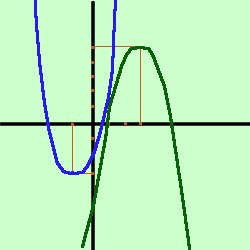

|
Disegniamo prima la parabola di equazione y= x2 + 2x - 2 per fare prima usiamo un metodo leggermente accelerato: Troviamo la coordinata x del vertice Vx
Adesso nell'equazione della parabola sostituiamo ad x il valore -1 e troviamo la y del vertice y = (-1)2 + 2(-1) - 2 = 1-2-2 = -3 Quindi abbiamo V(1;-3) Essendo -2 il termine noto sappiamo inoltre che la parabola passa per il punto (0;-2) Questo e' sufficiente per tracciare approssimativamente la parabola io, con la mia lunga esperienza, ci riesco agevolemente, ma, se tu hai difficolta', ti conviene trovare prima altri punti sostituendo ad x altri valori tipo 1, 2, -2,.. e calcolando la y corrispondente  Disegniamo ora la seconda parabola di equazione y= -x2 + 6x - 4 Troviamo la coordinata x del vertice Vx
Adesso nell'equazione della parabola sostituiamo ad x il valore 3 e troviamo la y del vertice y = -(3)2 + 6(3) - 4 = -9+18-4 = 5 Quindi abbiamo V(3;5) Essendo -4 il termine noto sappiamo inoltre che la parabola passa per il punto (0;-4) Tracciamo approssimativamente la parabola a destra i grafici |